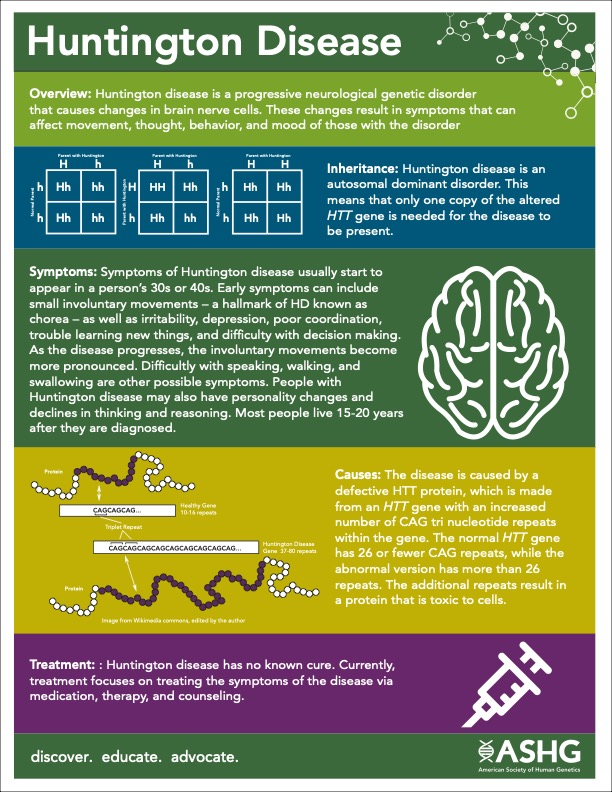

At Work: Biomedical Sceintist, Jargon Translator Health Educator, Coder and Product Developer using the Intersection of Human Genetics and technology to Improve the Health Outcomes of those with Genetic Differences
Why I do what I do
When it comes to Genetics the world is noisy scattered and confusing. I use my skills to help others make sense of it all no matter their background, experience or education
One of my goals as a scientist is to help identify and correct comment misconceptions and misunderstandings that relate to Genetics and health. I have also worked extensively to educate health care providers and layman on the ins and outs of Human Genetics and disease.
Previous Projects
A Quick Picture with my bestfriend and classmate before my poster presentation at the American Soceity of Human Genetics

A Resource I developed after the annual DNA Day Essay Contest whre i discovered that many highschool students did not understand how Huntington Disease was inherritedMe and my team at our annual American Cancer Soceity Community Health Fair. We had over 5000 people in attendace while previous years capped at 200
A Resource I developed to answer common questions we got from the public about Direct To Consumer testing
How about you?
Have you ever do at Home Genetic testing? Did the handout teach you anything new about DTC
How I got here
A combination of curiority, frustration and wanting more
I thrive when I am challenged which is one of the things that led me to Coding temple. I found myself becoming bored with my career opportunities. It seemed that the more I advanced in my career the less I liked the work I was doing. I started interviewing for more roles in my field and was constantly asked about my programming experience. I was disappointed to share that I did not have much. I have seen code but I am truly a beginner. I love problem solving and puzzles. I do my best when I am constantly learning. All these factors led me to consider a bootcamp program.
After I complete my training at Coding Temple I hope to secure a role that allows me to use my cross training as a biomedical scientist and a programmer to develop products and programs that support the care of those with Genetic Differences. I also aspire to use my expertise to develop tools which help train he next generation of scientists, researchers and health care providers.
At Home:
A Busybee that enjoys live music, getting fit, crafts, dancing, hiking and vintage luxury fashion.
Boredom is painful for me and it is common for me to have multiple projects going on at the same time. When I am trying to relax I enjoy knitting and crocheting. Currently I am working on a blanket made from giant yarn
the start of a giant blanket
Music
a simple way to get throguh the day
I love live music. My favorite genres include Rock, Funk, Neo soul, Dance pop, Alternative r&b, Contemporary classical and Afrofuturism. It’s common for me to play a song I like repeatedly for days on ends despite how annoying it is to my loved ones ( this is why they invented headphones) .Spotify Wrapped named my tops artist of 2021 as Miguel, Usher, Summer Walker, Jasmine Sullivan and WIllow Smith. I’m confident that Usher will beat Chris Brown in a vs. battle anyday. When I get a job offer after bootcamp. I plan to celebrate by purchasing tickets for Ushers Vegas Residency Show.
My Huaband and I at the Miguel Concert for my birthday
How about you?
Name an artist that you want to see in concert but have not had the chance to yet
Health
Sunshine, Fresh Air and Real Food
Nature is my Zen. I love to garden, hike and be outdoors. My husband and I have a goal to see all the national parks before, well… we do not really have a deadline but we plan to keep going until we cannnot
anymore.
I love learning about holistic health and wellness. In the last year I have lost 40lbs while still eating ice cream and enjoying real food. I’ve also been able to beat some health challanges without medication or extreme measures. I am
proud of me and I feel good in my skin.
Before
After
Contact Me
Please Contact me with information, questions or connections